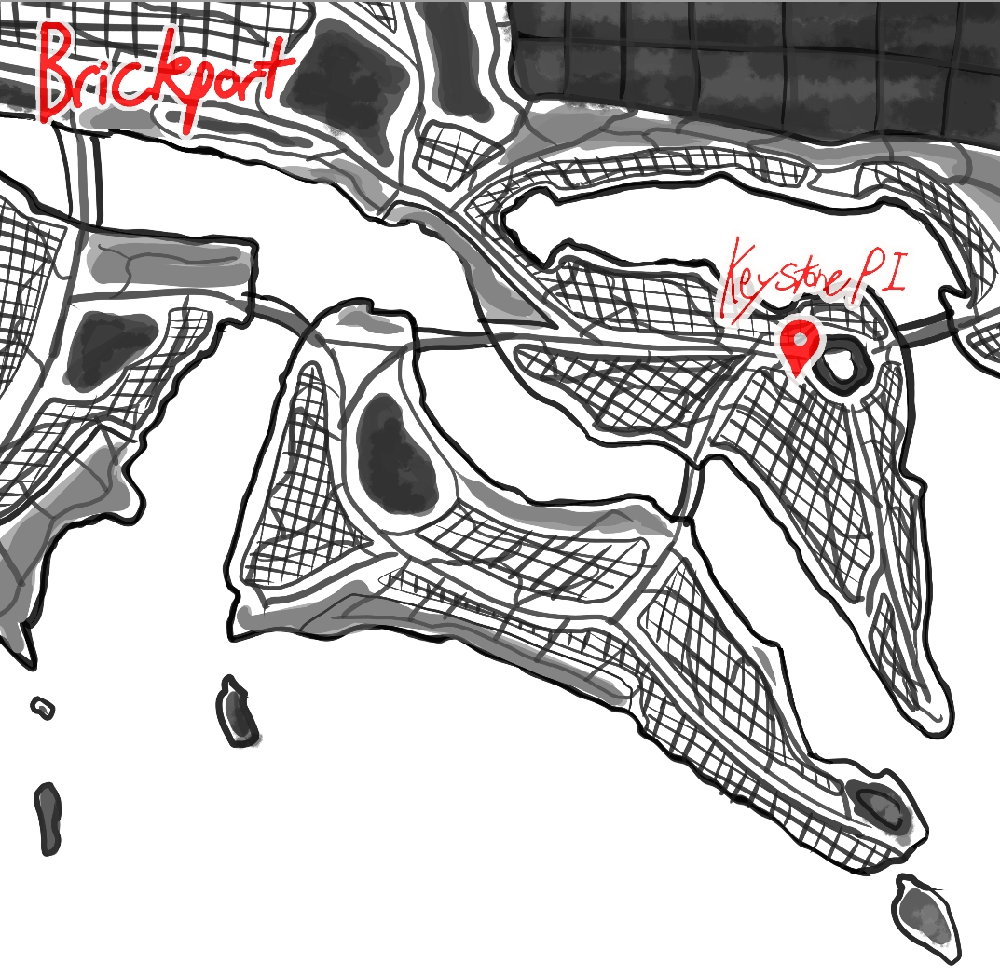

city map

Brickport
Brickport is a huge and bustling seaside city. Although the country is more than 80% city, each section is run apart from the rest as if they were their own individual cities. The capital is known for its sea trade and the huge amount of green space. This is mainly because The city has grown upwards, huge, towering skyscrapers are common in Brockport. The only 1-2 story buildings are Wills bar and the parliamentary building but that's because they both have floors deep in the ground.
Notes:
- Keystone PI is located near the entrance to the government building.
- The main business district is on the island Keystone PI is on.
- The entire edge of the second island is all docks and storage for containers.